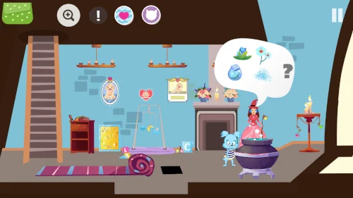
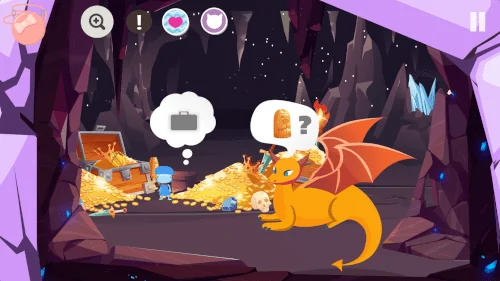
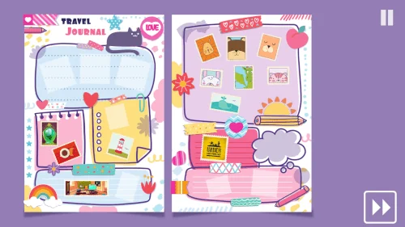

Google Play
Ainda não é apresentada uma avaliação pública.
10+
Ver a página e as opiniõesAventuras point-and-click · iOS, Android, Windows, macOS, Linux
Procura uma poção para ajudar a tua mãe e conhece fadas e um dragão pelo caminho.
Descobre os detalhes ↓
Explora cenários ilustrados, recolhe objetos e resolve enigmas point-and-click. Um diário e carimbos para colecionar acompanham as tuas descobertas em Tiny Story 5.


Ainda não é apresentada uma avaliação pública.
10+
Ver a página e as opiniões5.0
Ver a página e as opiniõesAs avaliações são apresentadas separadamente por loja e podem variar conforme o país e ao longo do tempo.
Consulta a página oficial para conhecer a disponibilidade, os preços e os idiomas do jogo.
As soluções estão disponíveis em inglês e francês. As páginas dos jogos também incluem ligações para vídeos das soluções.